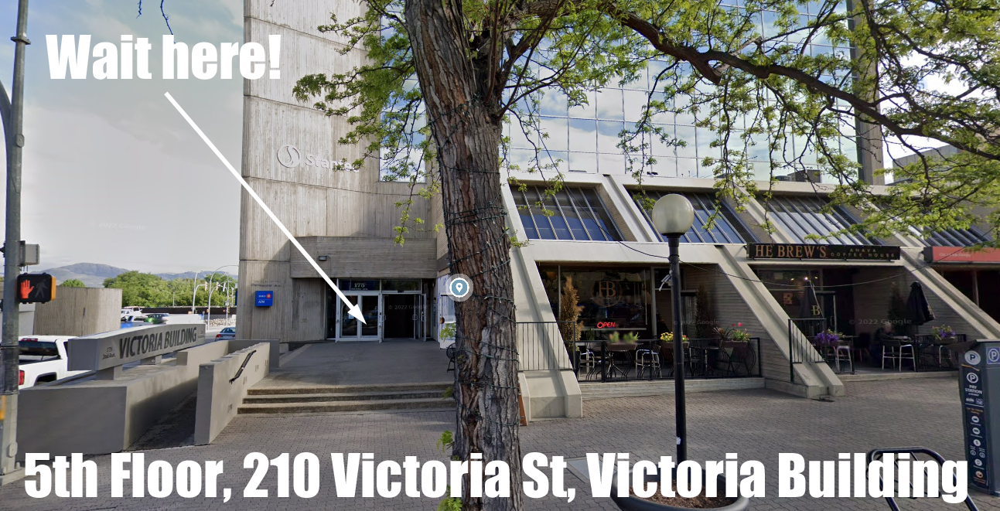

Reminder: Next KARC Monthly Meeting is Thursday, January 5 at 7:00PM
Back to StoriesStory 716
Sun, 2023-01-01 15:44 — VE7FSR
Next mtg JAN 5.png The next monthly meeting of the Kamloops Amateur Radio Club will be held on Thursday, January 5, 2023 at 7:00 PM PST.
The KARC is pleased to announce that our special guest presenter will be the Coquitlam Amateur Radio Club , VE7SCC .
CARESS_Logo_20210206_Small.png This high-definition virtual tour will be presented in real-time by Coquitlam club members and will cover the following topics: Club History; Partnership with the City of Coquitlam; Capabilities across all amateur bands including CFARS; BCWARN-enabled remote station control and demo; Station automation and contesting; Mobile comms trailer; Mechanical and Electrical fabrication and repair on site; Video Conferencing and online streaming setup; and, Live Q&A with members of VE7SCC.
VE7SCC 2.png VE7SCC.png This will be hybrid meeting, but you are encouraged to join us in person because you will get the best experience of the live high-definition video feed from VE7SCC .
Please don't miss this opportunity!
You will be amazed (*blown away*) by the VE7SCC club station, comms trailer, fabrication facilities, etc..
VE7SCC 3.jpg VE7SCC 4.png VE7SCC 5.jpg For those who can only join online, please use this link: Join Zoom Meeting https://us02web.zoom.us/j/81900487788?pwd=UjRzZFJOM2huMjExajFtVGlFZC9tUT09 Meeting ID: 819 0048 7788 Passcode: ve7scc One tap mobile +12042727920,,81900487788# Canada +14388097799,,81900487788# Canada To join the meeting in person please meet outside the lobby of the Victoria Building at 210 Victoria Street .
The KARC meeting will be held in the offices of the Province of BC on the 5th Floor.
This is a controlled access building so please try to be there by 6:50pm so we can start the meeting promptly on time at 7pm.
Please wait outside until someone comes to open the door.
You may also call (250) 318-5150 to let us know you are downstairs waiting.

There will be donuts and apple fritters for those attending in person!
The Agenda and Minutes from the last meeting are attached below.
Attachment Size Meeting minutes from the December meeting 428.78 KB January 2023 Financial Report 153.11 KB January 2023 Meeting Draft Agenda 97.19 KB